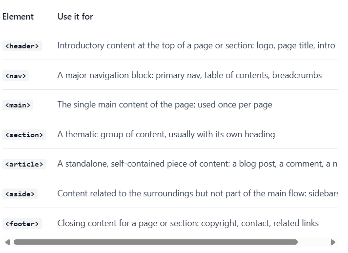

...
...
This paragraph is a block element.
This sentence contains an inline element in the middle.
This paragraph and the next one are inside the same group.
Anything CSS does to the div applies to both.
Hover over this word to see a tooltip.

The article body...